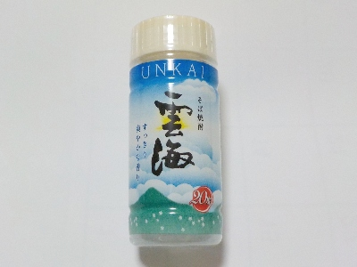
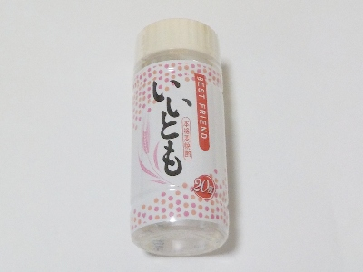

宮崎県宮崎市昭栄町45番地1
更新日 : 2026/03/14

すっきりしていて飲みやすい焼酎です。アルコールが20度ですが、それより軽い感じがするのでストレートで飲むのが丁度いいと思いました。
クセがなくて上品な味わいですね。いろんな料理に合いそう。
更新日 : 2025/04/14

アルコール度数が20度ですが、それより多いアルコール感がありました。なんでだろう。
スッキリとした味なので、アルコールの味が感じやすかったのかもしれません。お酒を飲みたくて飲んでいるので、アルコール感があるのはいいことかもしれないですね。
大麦はオーストラリア産です。国際的ですね。パッケージにBEST FRIENDって書いてあるのがなんか納得しました。
【おいしいものを食べよう。】【たくさん寝よう。】
【ソロ活をしよう!】【季節感のあることをしよう。】【動画視聴はほどほどに。】【当サイトの全てのコンテンツは無断転載禁止です。】